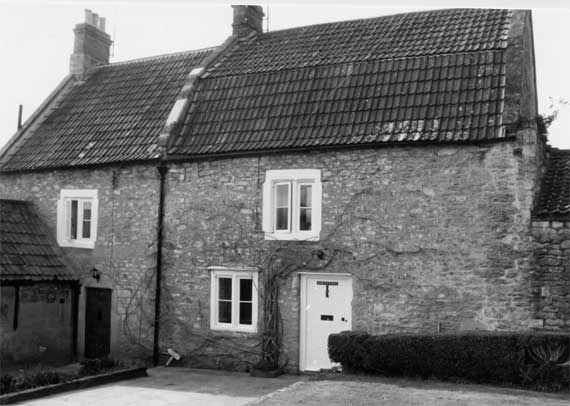

Type of building:
Attached cottages
Listing:
Grade ll
Plan and elevation:
A) BE 040 - single pile, two unit. Two storey with attic. Single storey
extension.
B) BE 041 - single pile, single unit and cross entry. Two-storey with attic. Single
storey extension.
Summary of the probable main building
history:
Early 17th Century. Late 17th Century alterations. Major division and alterations
in the mid 18th Century.
B) Extended late 18th or early 19th Century.
A) extended
mid - late 20th Century

BE 040 (right) & BE 041 (left) - North elevation
Exterior:
The two cottages are built into a slope running eastwards down to the St. Catherines’s
Brook. Taken as one, they are gable end to the main road.
Constructed of rough coursed rubble stone with no sign of a join between the two cottages. The east gable end of BE 041 has dressed quoins, which are lacking on the other cottage although BE 040 is abutted to the west by a single storey building now under separate ownership but which may have been an outshot of the cottage.
BE 040 has a gabled gambrel style mansard roof while the roof of the other cottage is pitched. Both roofs are double Roman tiled with coped raised verges and, in the case of BE 040, moulded kneelers. There are two ashlar and brick chimney stacks, one for each cottage. In the case of BE 041, the stack is on the gable end of the building whereas, in the case of BE 040, the stack is more or less centralised, that is positioned on the party wall.
The north elevation of BE 040 has a single two-light wooden casement window with an ogee and hollow chamfer section mullion and dressed stone surround under a straight drip label on the ground floor and, on the first floor, a single two-light wooden casement window with a chamfered mullion and a dressed stone surround. The principal entry is a later insertion, being under a concrete lintel and lacking a dressed stone doorcase. To the left, the north elevation of BE 041 houses a single two-light casement window with dressed stone surrounds at first floor level (the ground floor is partially covered by a single storey extension erected at a right angle to the main building). The principal entry is fitted with a modern door framed in a dressed stone surround.
The south elevation appears to be the original frontage of the two cottages. BE 040, to the left, has a single casement window, at the level of the ground floor, with a dressed stone surround of ogee section and a straight drip label over (at the date of survey the mullion was missing. A new mullion was inserted during building work in 2002). The modern kitchen extension conceals another former ground floor window converted into an interior door opening but with the drip label over it intact. At the first floor level there is a three-light casement window with ovolo section mullions under a drip label with returns. There is another, but later inserted, single-light window with ovolo section reveals. There are two dormers in the attic.
To the right, the south elevation of BE 041 has three two-light casement windows with stone mullions - two of ogee section (apparently replacements) and one (an apparent original) of ovolo section. Two windows are under drip labels - one straight and the other with a return. The south entry has deeply chamfered dressed stone jambs with stops and this would appear to be the original principal entry. The gable end wall is offset at first floor level as the wall thickness decreases. There are also two weather courses on the gable, one of which is cut through by a two- light mullioned window at attic level. This window is not centralised and appears to be a later insertion. Centralised to the left of the window is a small blocked opening which may once have been a ventilation/owl swoop opening to the attic storage room although now it is backed by the internal chimney breast.
The single storey extension abutting the north elevation of BE 041 is of ashlar construction. Its west elevation formerly housed three entries, two of which are blocked while the third is partially blocked to form a window.
Interior:
A) Property BE 040.
A semi-circular stair by the principal entry rises around a newel and extends
to the attic. Wall thickness is about 60-63 cm. Three board doors, with iron strap
hinges, are in various rooms of the cottage. The room to the right of the entry
(the dining room), contains what may be a large fireplace on the west gable wall.
This fireplace is now blocked. Next to this possible fireplace, building work
in 2001 revealed a wide entry with wooden lintels apparently giving access to
the single storey structure abutting the west gable wall. This entry was sealed
with ashlar at some unknown date.
The room to the left of the entry (the living room) is at a lower level. The rooms are separated by an infilled wood stud partition. Running the full length of both rooms is an inserted chamfered ceiling beam, cyma or lamb’s tongue stopped at one end only. As the 2001 building work also revealed, this beam supports (and conceals when ceiled over) a massive un-sawn waney edge beam running across the width of the living room. The living room also contains on the east party wall an inserted brick built chimney breast and fireplace opening with a wood bressumer, chamfered and step stopped. The window openings are splayed with ogee and hollow chamfer section mullions although the hollow chamfer is not greatly pronounced.
A first floor bedroom contains a small corner fireplace of stone, which is arched, bolection moulded and fitted with a register plate cast iron grate.
The roof is of two truss butt purlin construction, the purlins cut back at the pegged joints with the principals and bear carpenters marks. Windbraced secondary rafters are iron nailed. The yoked ridge piece is diagonally set. The principal rafters contain empty angled mortices as though formerly housing the angled struts of an earlier roof.
B) Property BE 041
A semi-circular stair immediately by the principal entry rises to the attic. Its
newel post rises to the roof. There is evidence of plaster and lathe on the stair
well wall. There is a cross entry arrangement. Both the rear entry (presently
sealed) and the principal entry still retain their former door hinge pintles directly
fixed to the masonry jamb. Wall thickness varies but is generally about 60 cm.
There is only one room plus the entry area although there is evidence in the form
of a former stone partitioning and a blocked door to indicate that the room had,
at some earlier time, been sub-divided. A substantial un-sawn timber beam spans
the width of the structure. The east gable wall houses a stone fireplace -
a depressed four-centred arch, chamfered with ogee moulding and freestone lintel.
The fireplace is of surprisingly high quality in a small cottage and contrasts
markedly with the unfinished ceiling beam. The first floor room above has a similar
fireplace on a reduced scale and contains a small late 18th Century "Pantheon"
iron grate. This room is floored with elm boards (some of which exceed 30 cm.
in width) including recycled boards from the attic room (owners information).
A sawn beam spans the width of the room. The attic gable wall houses a small stone
fireplace with a beaded edge and with a mid to late 19th Century arch plate grate.
The single roof truss consists of substantial waney edge un-sawn principals (c.
30 x 12 cm.) and collar (c. 19 x 12 cm.). Carpenters marks are present. There
is a diagonal joint with a yoke where the principals meet at the apex. The principals
have been extended at their base by jointed crucks apparently to increase the
height of the roof. The purlins have at some time been replaced with purlins of
slighter scantling although it is clear that the original purlins were trenched
into the principals to form a through purlin roof. Roof pitch is about 50% - 52%.
The party wall with BE 040 is of brick construction (c.9" x 4 1/4" x
2 5/8" brick dimensions)
The single storey extension, presently ceiled, was at one time open to the roof with plaster and lathe infill covering the rafters. It consists of one room but marks on the west wall indicate the former presence of at least one partition and the same wall possesses three blocked entries (one now converted into a window). There is a small stone fireplace with a beaded edge on the gable wall.
Date & development:
The development history of the cottages is complex. The lack of apparent joints
between the two cottages would suggest that the properties were originally built
as one house. The plan would then be the traditional single pile, three unit and
cross entry arrangement. On the evidence of the wall thickness, the gable wall
profile with its blocked ventilation slit and the through purlin roof construction
of BE 041, together with the surviving original ovolo mullions and the external
door hinging arrangement, it is suggested that the cottages originally constituted
a farmhouse of early 17th Century date. The room arrangement may have been parlour,
hall and dairy (there is evidence that the central unit was a the dairy). There
was a ventilated attic space for the storage of produce. The property was substantially
altered in the late 17th Century with the insertion of fireplaces in the gable
ends and new ogee section mullion windows. It is not certain whether the property
still functioned as a farm. If so, it is probable that agricultural activities
had been removed from the house. Subsequently, the character of the property was
radically changed again. It was divided into the present arrangement of two separate
cottages, a mansard roof was put onto BE 040, possibly reusing some of the timbers
of the old pitched roof, the roof of BE 041 was heightened, a brick party wall
erected and BE 040 was given a separate principal entry in the north elevation.
On the evidence of the cut back purlins and the brick sizes this work was probably
accomplished in the mid 18th Century. The roof pitch and massive truss of BE 041
suggest a stone roof (borne out by a photograph of 1855 and stone tile fragments
found at eaves level - owners information).
The BE 041 extension of ashlar construction appears to be of late 18th - early 19th Century date. Its usage is uncertain. Probably an animal shelter in origin (the owner reports the former existence of a brick floor) but then probably converted into a workshop or residential area with the insertion of a domestic type fireplace and an interconnection with the main house.
Ownership / occupation:
It has been suggested that the cottages were converted for the use of workers
at the nearby former clothiers house (see BE 037). While this is a possibility
(the deeds, in fact, indicate joint ownership at various periods), the properties
were certainly independently owned in 1840 - the Tithe Map and Apportionment Schedule
shows that they were owned and occupied by Elizabeth Bartlett.
References:
- Tithe Map and Apportionment Schedule 1840. Somerset Record Office
- Title deeds in the possession of the owners
- Calotype from Mowbray Green Collection Bath Reference Library
Reference Pictures
| BE
041 east elevation - Note apparent blocked opening to left
of upper window |
BE
041 - South elevation (possible original front of building) |
BE
040 & BE 041 - South elevation |
| BBE
040 - Carpenters marks on principal rafter |
BE
040 - Fireplace in first floor bedroom with arched bolection
moulding |
BE
041 - Ground floor fireplace, possibly inserted with depressed
four-centred arch, chamfered with ogee moulding and freestone lintel |
Survey Drawings
| Ground
Plan |
North
Elevation |
Section |
Images from the Archives
| The
south elevation, the original front, of the two cottages. From a
calotype of about 1855 |